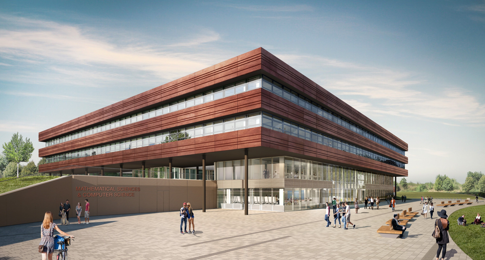

Research directions
Our group studies fundamental approaches to deep learning and reinforcement learning, exploring how future AI could differ from today’s architectures. We believe future agents will be:
- Adaptive: able to instantly change their architecture within a fixed hardware budget as the task distribution changes, without thousands of gradient descent steps.
- Self-wiring: able to change their own internal programs over time, reusing general-purpose components or creating new functions for the task at hand.
- Collective: better at working together, for example by building and using shared temporal knowledge graphs.
- Tokenizer-free: free from the fixed tokenization choices behind many of the problems Karpathy highlights.
- Compressed: eventually reaching a point where cognitive cores and internal models stop growing and become smaller and simpler. This view draws on Kolmogorov complexity and Sutskever’s discussion of compression and generalisation.
If you would like to explore these directions or similar through PhD or postdoctoral research, email me.
Research at Durham
Durham is a beautiful historic cathedral city situated in the north-east of England, where the University has long traditions but modern values. The department of Computer Science has a wonderful friendly and supportive culture with access to exceptional resources such as a world class supercomputer, Hamilton, and we have access to the EPSRC Tier 2 National HPC facility (“BEDE”) hosted in Durham and operated by ARC on behalf of the N8 Universities. The department of Computer Science boasts an impressive £42 million building and maintains our own NVIDIA Compute Center (with hundreds of thousands of pounds worth of GPUs) configured for Deep Learning.


PhD application process
- Email your CV with a brief outline of your research interests and background. Strong candidates will be invited to a short interview and discussion of their proposal.
- You will be invited to submit your PhD application when the system opens in October, aiming to apply before mid-December.
- The department reviews your application against its entry requirements. If successful, you receive an offer for a PhD place. Scholarship funding is considered separately.
- In early January, once details of the scholarship round are released, we prepare and submit a separate funding application together. We help with the additional documents, including statements on the project’s strategic fit and the proposed supervision team.
PhD funding
Please read the guidelines for securing funding along with other guidance such as the entry and language requirements. There are a number of ways to secure funding including Durham Doctoral Studentships (DDS) which are fully-funded 3.5 year PhD studentships.
Students can also receive scholarships from their home countries. Please see the following link for more information about eligibility. Alternatively, you may wish to self-fund your studies; please email me if this is something you wish to consider.
Visiting scholars
If you are interested in a visiting position, either as an academic scholar or as a PhD student, please email me as above. I am interested in candidates with strong mathematical ability in statistics, machine learning, or geometry. Durham has particularly low living/housing/accommodation costs coupled with an exceptionally high quality of life, and our building is designed to be accessible for parents.